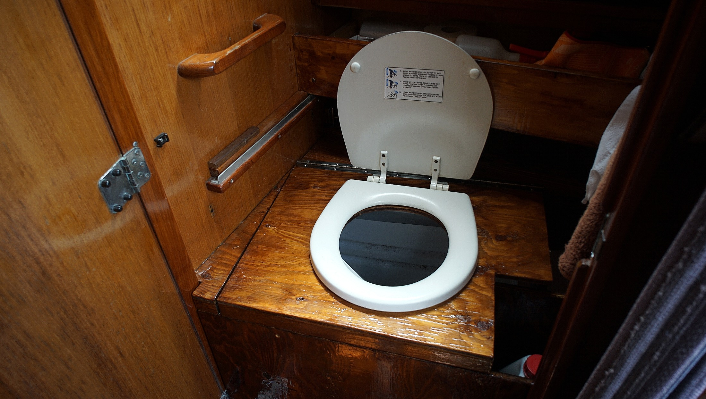

dry toilet
Related pages: waste, our dry toilet.
Onboard we have a dry toilet, also known as a waterless, or desiccating toilet. Unlike composting toilets, the goal is to keep the mix dry and odor-free, it is not meant a complete system that can compost fully. A true composting toilet is much larger, with systems for aeration, mixing and heating. Most sailboats cannot negotiate the power and space required by such a unit. A dry toilet separates the urine and the solids, eliminating smells.
A dry toilet eliminates the need for a holding tank and accompanying pipes, y-valves and macerators. One is not superior to the other in the marine world, but a dry toilet is less maintenance. On land, dry toilets are especially great to save on water, a precious resource.
On such a system liquids are diverted into a bottle, or tank by way or a urine diverter. Urine accounts for around 85% of the volume in a tank, having a diverter increases capacity for solids, which means not having to empty the tank as often.
Medium
A solids tank needs a medium to help process deposits. The choice of medium depends on budget, space and availability. Some mediums(coconut coir) are sold compacted, saving you space onboard, while others(peat moss) are not. Easiest materials to source are wood shavings, or chips and saw dust, they have good wicking ability, cover up odors well, and can be obtained cheaply or for free.
Another good cover material is wood ash, a by-product of wood burning. Wood ash eliminates smells best, and is great at removing moisture from deposits. Using this medium makes sense if your boat also houses a woodstove. The only downside is that ash is volatile and can make a mess.
No smells
Churn systems make use of an agitator, a handle which is fitted inside the solids tank. When turned, it aerates the mix while coating the latest deposit with the medium in the tank. Non-churn systems have no agitator, and rely on the addition of more medium after every deposit.
Sprizting the diverter with a 5:1 water and vinegar mix will help eliminate smells. After many days the container itself may begin to smell, adding a few inches of vinegar to the bottle beforehand can help. Dissolving citric acid in water (5g per 500 ml) and adding it to the bottle it also a good solution (a tip by Drew Fry, from an article in Practical Sailor magazine). By lowering the pH, fermentation is slowed down, resulting in fewer smells. If building your own, choose a polyethylene tanks. Polyethylene are less prone to retaining odors.
Emptying
A solids tank can last a long while before it needs emptying, how often depends on how many people are aboard. A general rule is to ensure the ratio of medium to human waste is 1:1. We keep the medium in a bag with a scoop. When the container is 3/4 full, or difficult to churn, it is necessary to empty the tank. Partnering with someone on land to make a humanure composting pile is the best thing to do. The alternative is to toss the mixture overboard when far enough from land (boating laws still apply)
Assuming the boat is your only home, disposing of the waste requires a bit of planning. If near a city, partnering with someone on land with composting facilities is ideal, but otherwise, bringing the solids to the trash in composting bags is the next best thing. When full, it’s possible to empty jugs of urine into public toilets. If there are no facilities nearby, capping it off to dispose of later, and replacing the jug is a good option.